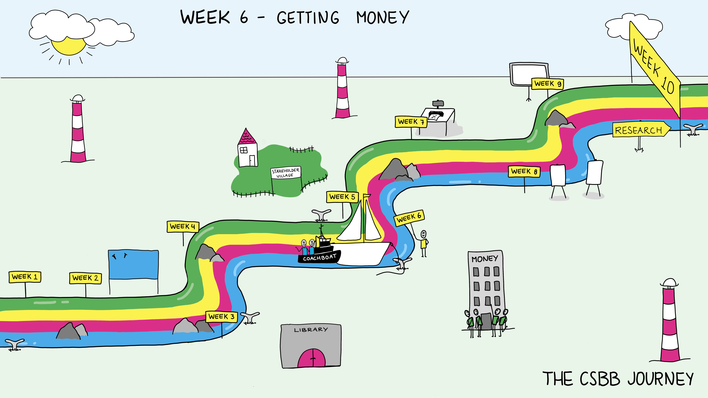

Week 1.6: Getting Money#
Science Spotlight
Lecture: Research Funding
Workshop: Narratives
Friday Symposium
Introduction and Goals#
Research is expensive, especially lab based research involving high tech equipment, special materials, and people with specialized skills. And if you add animals the price gets even higher. As we discussed last week there are financial stakeholders funding research: including universities, governmental agencies, Industry, and special interest groups (foundations). The pool of money is limited and the number of applications and projects is high. One of your jobs as a scientist is to convince funders to pay for your research to be done.
The main topic of this week is to discuss research funding and how to create a narrative for your ideas. We will discuss some of the more administrational sides of academia, such as how grant applications and research funding work. Further, you will learn the skills to tell the story of your research, and how to effectively use that story to convince people of the value of your project.
Lecture: Research Funding#
Overview#
The lecture aims at presenting the importance of funding in the decision-making process when it comes to science. Moreover, the lecture will include the steps that need to be taken during a grant application and the people that are involved in each part of the process. Examples from real-life situations will be provided as well.
Key Concepts#
How to write a good proposal
Importance of narratives in obtaining research funding
Relevant Learning Goals#
Students will understand the steps that need to be taken when applying for funds and their importance in the entire process
Workshop: Narratives#
Overview#
Humans like to process information through stories. Being able to create narratives is a valuable skill in communicating the relevance of your research to various audiences (grant reviewers, experts, stakeholders, public). In this workshop, you will learn how to create a narrative and how to make it work in your favour, by highlighting the importance of your research ideas. Students will learn about different narrative types and key ingredients of narratives. At the same time, you will work on constructing narratives about their projects. You apply these narratives to a text (research proposal) and a presentation (for example, a presentation on a symposium to a broader audience including various stakeholders). This way, storytelling skills are taught in the context of funding applications and explaining your research to diverse groups of people.
Key Concepts#
Narratives and storytelling
Relevant Learning Goals#
Students learn how narratives work in information processing
Students learn how to present their research ideas in a persuasive manner
Students work on how to integrate narratives into the report and presentation about their research topic
Students learn to adapt their story depending on their audience (readers/listeners)
Group activity of the Week#
It’s important when developing a narrative to have a clear idea of what the key elements to include are.
Identify and justify 3 ideas/themes in your project that should be included in your narrative for both presentation and grant application.
Discussion Questions#
Can you begin to tell a story about your project? What do you think is important to include in a narrative about a research project?
Do you know enough to develop a narrative? What do you bring as an individualist as tool, knowledge? Does that suit the expertise of our team?
Does creating a narrative to spotlight a specific result or approach of your scientific study conflict with scientific values such as objectivity, reproducibility, and transparency? How?
What do you bring as an individual to the story? Does that suit the expertise of our team?
Weekly Submitted Assignments#
Group#
Identify the important narrative elements in your project. (½ page)
Individual#
This assignment reflects back on your workshop a couple weeks ago on listening but also on narratives and telling your story.
What does it mean to feel heard? Which is harder for you, listening to others so they feel heard or being heard yourself?
References#
Framing and the perception of scientific messages
For more in-dept information on the effectiveness of narratives in
health communication:
Graaf, A. de, Sanders, J., & Hoeken, H. (2016). Characteristics of
narrative interventions and health effects: a review of the content,
form, and context of narratives in health-related narrative persuasion
research. Review of Communication Research, 4, 88-131.
https://doi.org/10.12840/issn.2255-4165.2016.04.01.011